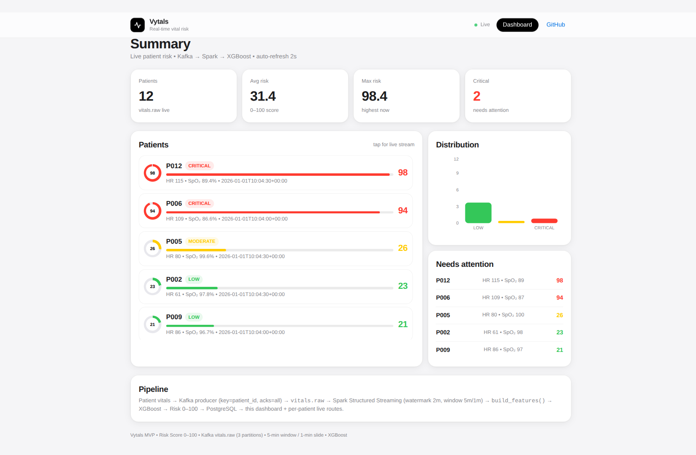
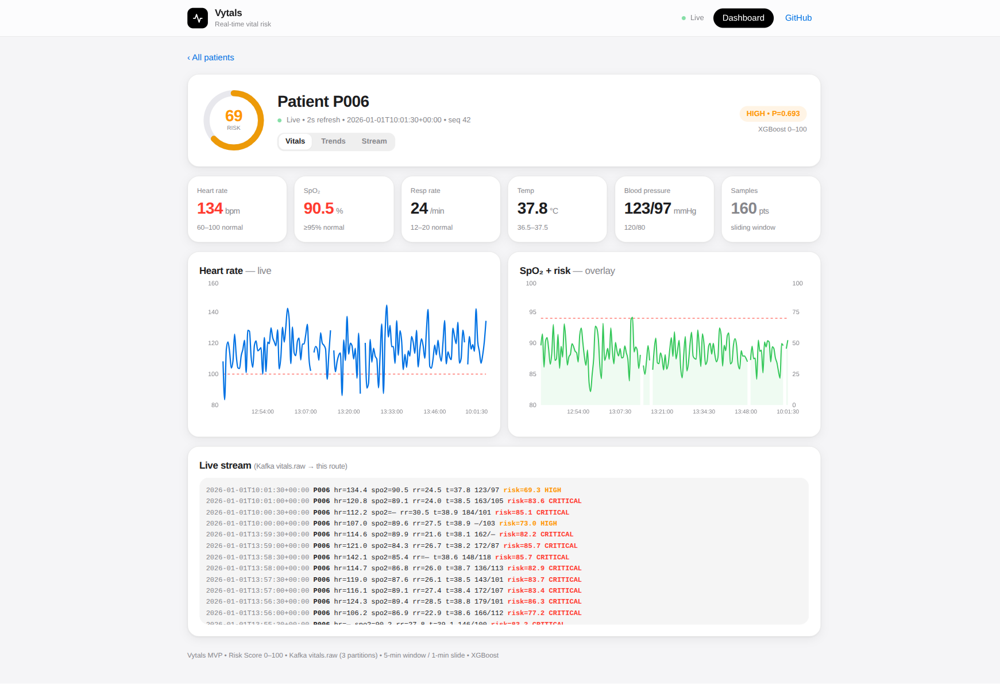

One heartbeat

LIVE RISK · 0–100
Vytals — live risk, 0–100
12 patients · avg 31.4 · max 98.4 · 2 critical

P006 flips CRITICAL
ring gauge re-scores every window · XGBoost 0–100
Every vital, 2s refresh
HR live trace · SpO₂ + risk overlay
Kafka → Spark → XGBoost → Postgres
raw stream tail · vitals.raw · 160 pts sliding window
Vytals.
Open the dashboard.